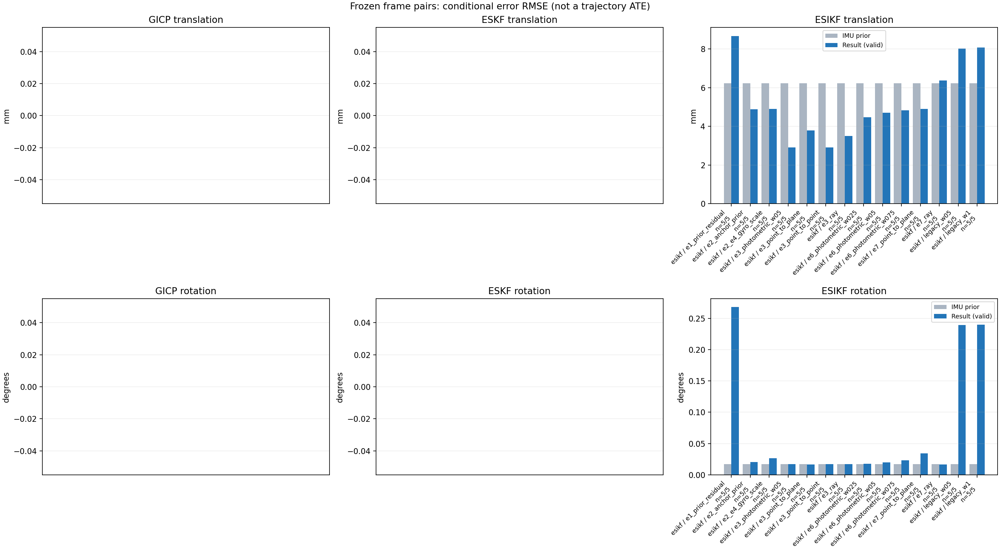

20261015_112553_up · depth=disparity_cache · cache=cff76b18e4e3a4334f1e
模型视差：/home/ubuntu22/slam/SIO_SLAM/models/tensorrt/disp_896x448_fp16.plan；engine SHA256=604cf6ac1f705c877260711730dd5d2d58c2a21f3020c03c668401ef7fb1e768。输入为生产裁剪与光照处理后的 RGB 0..255；此实验使用原始浮点像素视差，不应用完整前端的邻域视差后处理。
原始 ONNX SHA256：e9f49736a65d68d06681add463866b6defdf78fdd7f4f50f6cc941b682fdc0bc。
代价体图改写验证：ONNX Runtime 固定随机特征输入，最大绝对误差 0；该项检查图改写，完整模型精度仍需由录制数据评估。
配准代码版本：744ac2d993ae629b0cc44a3b1d995e04ab4fad48；观测生成版本：744ac2d993ae629b0cc44a3b1d995e04ab4fad48。
固定图像对与纯 IMU 先验；ESKF 回放固定 GICP 观测，ESIKF 直接读取点云。真值只用于此报告。
同时查看 converged 与 solver_status：上游默认 Stereo 在 max_iter / stopped_at_minimum 时也可能置 converged=true。valid 表示输入检查通过，不表示精度提升。欧氏 GICP 未提供独立的点距 RMSE，该列显示 NaN。
误差按每对图像的锚点计算，单位 m / degrees。此处 RMSE 不是全序列 ATE；末帧受同一锚点条件约束。NIS 与条件马氏距离是诊断量，少量相关图像对不能用于宣称协方差已校准。
全部指标 CSV · R / P / K 矩阵 CSV · Stereo 求解逐轮 CSV · ESIKF 逐轮 CSV · 配置快照 · 矢量图
unflagged 排除纯惯性先验平移误差超过 50 mm 的图像对；whitened 为误差按协方差白化后的每自由度均值，协方差与实际误差相符时约为 1。
| stage | method | variant | valid | total | result_translation_rmse_m | result_rotation_rmse_deg | result_translation_median_m | result_rotation_median_deg | result_translation_rmse_unflagged_m | result_rotation_rmse_unflagged_deg | improved_translation | improved_rotation | posterior_whitened_by_P_rot_mean | posterior_whitened_by_P_trans_mean |
|---|---|---|---|---|---|---|---|---|---|---|---|---|---|---|
| esikf | esikf | e1_prior_residual | 5 | 5 | 0.0086744 | 0.2679 | 0.0092535 | 0.13499 | 0.0086744 | 0.2679 | 1 | 0 | 144.03 | 84.467 |
| esikf | esikf | e2_anchor_prior | 5 | 5 | 0.0048845 | 0.020496 | 0.0021326 | 0.012524 | 0.0048845 | 0.020496 | 1 | 4 | 47.083 | 59.157 |
| esikf | esikf | e2_e4_gyro_scale | 5 | 5 | 0.0048951 | 0.026413 | 0.0021347 | 0.014746 | 0.0048951 | 0.026413 | 1 | 3 | 36.318 | 58.873 |
| esikf | esikf | e3_photometric_w05 | 5 | 5 | 0.0029169 | 0.017095 | 0.0017998 | 0.011711 | 0.0029169 | 0.017095 | 3 | 3 | 23.261 | 0.50396 |
| esikf | esikf | e3_point_to_plane | 5 | 5 | 0.003789 | 0.016754 | 0.0018137 | 0.011495 | 0.003789 | 0.016754 | 3 | 3 | 22.3 | 0.50995 |
| esikf | esikf | e3_point_to_point | 5 | 5 | 0.0029169 | 0.017096 | 0.0018001 | 0.01171 | 0.0029169 | 0.017096 | 3 | 3 | 23.263 | 0.50489 |
| esikf | esikf | e3_ray | 5 | 5 | 0.0035 | 0.017393 | 0.0019148 | 0.012918 | 0.0035 | 0.017393 | 2 | 3 | 21.557 | 0.42524 |
| esikf | esikf | e6_photometric_w025 | 5 | 5 | 0.004469 | 0.018007 | 0.0017035 | 0.012089 | 0.004469 | 0.018007 | 3 | 4 | 26.952 | 14.407 |
| esikf | esikf | e6_photometric_w05 | 5 | 5 | 0.0047088 | 0.02018 | 0.0018603 | 0.014932 | 0.0047088 | 0.02018 | 3 | 3 | 29.466 | 30.045 |
| esikf | esikf | e6_photometric_w075 | 5 | 5 | 0.0048303 | 0.023335 | 0.0020308 | 0.014837 | 0.0048303 | 0.023335 | 1 | 3 | 32.746 | 45.004 |
| esikf | esikf | e7_point_to_plane | 5 | 5 | 0.0049063 | 0.034651 | 0.0016177 | 0.014985 | 0.0049063 | 0.034651 | 3 | 2 | 29.396 | 11.215 |
| esikf | esikf | e7_ray | 5 | 5 | 0.0063684 | 0.016695 | 0.0039237 | 0.013275 | 0.0063684 | 0.016695 | 1 | 2 | 25.874 | 12.454 |
| esikf | esikf | legacy_w05 | 5 | 5 | 0.0080151 | 0.23896 | 0.0078441 | 0.10199 | 0.0080151 | 0.23896 | 1 | 0 | 55.528 | 35.46 |
| esikf | esikf | legacy_w1 | 5 | 5 | 0.0080673 | 0.23962 | 0.0078532 | 0.10239 | 0.0080673 | 0.23962 | 1 | 0 | 111.06 | 71.552 |

| stage | case | method | variant | status | solver_status | inliers | converged | covariance_convention | covariance_from_hessian | fitness | registration_rmse_m | prior_trans_error_m | result_trans_error_m | prior_rot_error_deg | result_rot_error_deg | prior_flagged | R_rot_trace_rad2 | R_pos_trace_m2 | nis_regularized | posterior_whitened_by_P_rot | posterior_whitened_by_P_trans |
|---|---|---|---|---|---|---|---|---|---|---|---|---|---|---|---|---|---|---|---|---|---|
| esikf | static_start | esikf | legacy_w1 | updated | converged | 13066 | 1 | 1 | 0 | 0 | 0.00010829 | 0.0028073 | 0.0066323 | 0.069493 | 0 | 1.9124e-07 | 1.0029e-06 | nan | 5.5627 | 9.2552 | |
| esikf | static_start | esikf | legacy_w05 | updated | converged | 13066 | 1 | 1 | 0 | 0 | 0.00010829 | 0.0027924 | 0.0066323 | 0.069978 | 0 | 3.822e-07 | 2.0048e-06 | nan | 2.8338 | 4.6557 | |
| esikf | static_start | esikf | e1_prior_residual | updated_not_converged | max_iterations | 13165 | 0 | 1 | 0 | 0 | 0.00010829 | 0.0062272 | 0.0066323 | 0.12462 | 0 | 1.8619e-07 | 9.1829e-07 | nan | 19.548 | 49.694 | |
| esikf | static_start | esikf | e2_anchor_prior | updated | converged | 13059 | 1 | 1 | 0 | 0 | 0.00010829 | 0.00038756 | 0.0066323 | 0.0064659 | 0 | 1.919e-07 | 1.0115e-06 | nan | 9.9348 | 0.83772 | |
| esikf | static_start | esikf | e2_e4_gyro_scale | updated | converged | 13059 | 1 | 1 | 0 | 0 | 0.00010829 | 0.00038757 | 0.0066323 | 0.006465 | 0 | 1.919e-07 | 1.0115e-06 | nan | 9.8651 | 0.83772 | |
| esikf | static_start | esikf | e6_photometric_w075 | updated | converged | 13059 | 1 | 1 | 0 | 0 | 0.00010829 | 0.0003363 | 0.0066323 | 0.0065192 | 0 | 2.5585e-07 | 1.3495e-06 | nan | 9.8707 | 0.58078 | |
| esikf | static_start | esikf | e6_photometric_w05 | updated | converged | 13059 | 1 | 1 | 0 | 0 | 0.00010829 | 0.00027011 | 0.0066323 | 0.0065737 | 0 | 3.8358e-07 | 2.0239e-06 | nan | 9.8608 | 0.33751 | |
| esikf | static_start | esikf | e6_photometric_w025 | updated | converged | 13059 | 1 | 1 | 0 | 0 | 0.00010829 | 0.00019281 | 0.0066323 | 0.0066151 | 0 | 7.6595e-07 | 4.0435e-06 | nan | 9.7828 | 0.15219 | |
| esikf | static_start | esikf | e7_ray | updated | converged | 13059 | 1 | 1 | 0 | 0 | 0.00010829 | 0.00062849 | 0.0066323 | 0.006618 | 0 | 0.016589 | 2.0916e-05 | nan | 9.5396 | 1.4932 | |
| esikf | static_start | esikf | e7_point_to_plane | updated | converged | 13059 | 1 | 1 | 0 | 0 | 0.00010829 | 0.00059117 | 0.0066323 | 0.0070755 | 0 | 1.2849e-06 | 5.057e-06 | nan | 11.019 | 1.4221 | |
| esikf | static_start | esikf | e3_point_to_point | updated | converged | 13059 | 1 | 1 | 0 | 0 | 0.00010829 | 0.0001131 | 0.0066323 | 0.0066311 | 0 | 1.0509e-05 | 5.9893e-05 | nan | 9.5971 | 0.046154 | |
| esikf | static_start | esikf | e3_photometric_w05 | updated | converged | 13059 | 1 | 1 | 0 | 0 | 0.00010829 | 0.00011309 | 0.0066323 | 0.006631 | 0 | 1.0498e-05 | 5.9984e-05 | nan | 9.597 | 0.046142 | |
| esikf | static_start | esikf | e3_ray | updated | converged | 13059 | 1 | 1 | 0 | 0 | 0.00010829 | 0.00011261 | 0.0066323 | 0.0066322 | 0 | 1.4512 | 0.0018068 | nan | 9.5789 | 0.04535 | |
| esikf | static_start | esikf | e3_point_to_plane | updated | converged | 13059 | 1 | 1 | 0 | 0 | 0.00010829 | 0.00011298 | 0.0066323 | 0.0066468 | 0 | 6.3305e-05 | 0.00015245 | nan | 9.623 | 0.045754 | |
| esikf | sync_motion | esikf | legacy_w1 | updated | converged | 12481 | 1 | 1 | 0 | 0 | 0.00031706 | 0.0097036 | 0.012913 | 0.49181 | 0 | 1.9967e-07 | 9.3809e-07 | nan | 336.5 | 103.35 | |
| esikf | sync_motion | esikf | legacy_w05 | updated | converged | 12474 | 1 | 1 | 0 | 0 | 0.00031706 | 0.0095896 | 0.012913 | 0.4904 | 0 | 3.9954e-07 | 1.8831e-06 | nan | 168.68 | 50.727 | |
| esikf | sync_motion | esikf | e1_prior_residual | updated_not_converged | max_iterations | 12497 | 0 | 1 | 0 | 0 | 0.00031706 | 0.0097139 | 0.012913 | 0.53825 | 0 | 1.9861e-07 | 9.4138e-07 | nan | 436.38 | 103.42 | |
| esikf | sync_motion | esikf | e2_anchor_prior | updated | converged | 12346 | 1 | 1 | 0 | 0 | 0.00031706 | 0.00084127 | 0.012913 | 0.012524 | 0 | 2.0713e-07 | 1.0192e-06 | nan | 55.759 | 3.2762 | |
| esikf | sync_motion | esikf | e2_e4_gyro_scale | updated | converged | 12342 | 1 | 1 | 0 | 0 | 0.00031706 | 0.0007525 | 0.012913 | 0.038956 | 0 | 2.0709e-07 | 1.028e-06 | nan | 8.9991 | 1.8057 | |
| esikf | sync_motion | esikf | e6_photometric_w075 | updated | converged | 12348 | 1 | 1 | 0 | 0 | 0.00031706 | 0.0006146 | 0.012913 | 0.030439 | 0 | 2.7614e-07 | 1.3685e-06 | nan | 4.9952 | 1.0699 | |
| esikf | sync_motion | esikf | e6_photometric_w05 | updated | converged | 12353 | 1 | 1 | 0 | 0 | 0.00031706 | 0.00047814 | 0.012913 | 0.020583 | 0 | 4.1373e-07 | 2.0482e-06 | nan | 1.9208 | 0.55959 | |
| esikf | sync_motion | esikf | e6_photometric_w025 | updated | converged | 12349 | 1 | 1 | 0 | 0 | 0.00031706 | 0.00036426 | 0.012913 | 0.012089 | 0 | 8.2703e-07 | 4.0983e-06 | nan | 0.55579 | 0.27425 | |
| esikf | sync_motion | esikf | e7_ray | updated | converged | 12352 | 1 | 1 | 0 | 0 | 0.00031706 | 0.0011532 | 0.012913 | 0.013275 | 0 | 0.0086394 | 1.2421e-05 | nan | 0.55131 | 3.1506 | |
| esikf | sync_motion | esikf | e7_point_to_plane | updated | converged | 12407 | 1 | 1 | 0 | 0 | 0.00031706 | 0.00096331 | 0.012913 | 0.068983 | 0 | 1.315e-06 | 4.846e-06 | nan | 22.299 | 2.49 | |
| esikf | sync_motion | esikf | e3_point_to_point | updated | converged | 12347 | 1 | 1 | 0 | 0 | 0.00031706 | 0.00031724 | 0.012913 | 0.01171 | 0 | 1.1372e-05 | 6.1014e-05 | nan | 0.46725 | 0.17849 | |
| esikf | sync_motion | esikf | e3_photometric_w05 | updated | converged | 12347 | 1 | 1 | 0 | 0 | 0.00031706 | 0.00031723 | 0.012913 | 0.011711 | 0 | 1.1363e-05 | 6.1115e-05 | nan | 0.46739 | 0.17847 | |
| esikf | sync_motion | esikf | e3_ray | updated | converged | 12347 | 1 | 1 | 0 | 0 | 0.00031706 | 0.00032318 | 0.012913 | 0.012918 | 0 | 0.76346 | 0.001116 | nan | 0.52213 | 0.18307 | |
| esikf | sync_motion | esikf | e3_point_to_plane | updated | converged | 12347 | 1 | 1 | 0 | 0 | 0.00031706 | 0.00032615 | 0.012913 | 0.011495 | 0 | 6.537e-05 | 0.0001531 | nan | 0.41671 | 0.19424 | |
| esikf | main_motion | esikf | legacy_w1 | updated | converged | 15822 | 1 | 1 | 0 | 0 | 0.0018857 | 0.0075979 | 0.015355 | 0.1562 | 0 | 1.4574e-07 | 1.0296e-06 | nan | 38.616 | 61.757 | |
| esikf | main_motion | esikf | legacy_w05 | updated | converged | 15823 | 1 | 1 | 0 | 0 | 0.0018857 | 0.0075733 | 0.015355 | 0.15569 | 0 | 2.9111e-07 | 2.0548e-06 | nan | 19.265 | 30.797 | |
| esikf | main_motion | esikf | e1_prior_residual | updated_not_converged | max_iterations | 15826 | 0 | 1 | 0 | 0 | 0.0018857 | 0.0092535 | 0.015355 | 0.17292 | 0 | 1.4473e-07 | 1.0164e-06 | nan | 51.924 | 92.92 | |
| esikf | main_motion | esikf | e2_anchor_prior | updated | converged | 15815 | 1 | 1 | 0 | 0 | 0.0018857 | 0.0021326 | 0.015355 | 0.014767 | 0 | 1.4644e-07 | 1.0357e-06 | nan | 80.19 | 16.858 | |
| esikf | main_motion | esikf | e2_e4_gyro_scale | updated | converged | 15814 | 1 | 1 | 0 | 0 | 0.0018857 | 0.0021347 | 0.015355 | 0.014746 | 0 | 1.4645e-07 | 1.0357e-06 | nan | 74.044 | 16.844 | |
| esikf | main_motion | esikf | e6_photometric_w075 | updated | converged | 15819 | 1 | 1 | 0 | 0 | 0.0018857 | 0.0020308 | 0.015355 | 0.014837 | 0 | 1.9501e-07 | 1.3782e-06 | nan | 74.282 | 11.485 | |
| esikf | main_motion | esikf | e6_photometric_w05 | updated | converged | 15822 | 1 | 1 | 0 | 0 | 0.0018857 | 0.0018603 | 0.015355 | 0.014932 | 0 | 2.926e-07 | 2.069e-06 | nan | 74.106 | 6.231 | |
| esikf | main_motion | esikf | e6_photometric_w025 | updated | converged | 15826 | 1 | 1 | 0 | 0 | 0.0018857 | 0.0017035 | 0.015355 | 0.015062 | 0 | 5.8163e-07 | 4.0909e-06 | nan | 72.997 | 2.0568 | |
| esikf | main_motion | esikf | e7_ray | updated | converged | 15864 | 1 | 1 | 0 | 0 | 0.0018857 | 0.0045586 | 0.015355 | 0.015752 | 0 | 0.0090296 | 1.4559e-05 | nan | 81.158 | 14.826 | |
| esikf | main_motion | esikf | e7_point_to_plane | updated | converged | 15825 | 1 | 1 | 0 | 0 | 0.0018857 | 0.0016177 | 0.015355 | 0.014985 | 0 | 1.0438e-06 | 4.504e-06 | nan | 73.512 | 2.3752 | |
| esikf | main_motion | esikf | e3_point_to_point | updated | converged | 15838 | 1 | 1 | 0 | 0 | 0.0018857 | 0.0018001 | 0.015355 | 0.015302 | 0 | 7.9415e-06 | 5.9921e-05 | nan | 66.393 | 0.60322 | |
| esikf | main_motion | esikf | e3_photometric_w05 | updated | converged | 15839 | 1 | 1 | 0 | 0 | 0.0018857 | 0.0017998 | 0.015355 | 0.015302 | 0 | 7.9323e-06 | 5.9956e-05 | nan | 66.391 | 0.60328 | |
| esikf | main_motion | esikf | e3_ray | updated | converged | 15841 | 1 | 1 | 0 | 0 | 0.0018857 | 0.0019148 | 0.015355 | 0.015352 | 0 | 0.81201 | 0.0013698 | nan | 65.545 | 0.66893 | |
| esikf | main_motion | esikf | e3_point_to_plane | updated | converged | 15842 | 1 | 1 | 0 | 0 | 0.0018857 | 0.0018137 | 0.015355 | 0.015334 | 0 | 5.104e-05 | 0.00013317 | nan | 66.293 | 0.62157 | |
| esikf | main_motion_long | esikf | legacy_w1 | updated | converged | 16171 | 1 | 1 | 0 | 0 | 0.011977 | 0.010197 | 0.03152 | 0.10239 | 0 | 1.4669e-07 | 1.1458e-06 | nan | 156.47 | 100.62 | |
| esikf | main_motion_long | esikf | legacy_w05 | updated | converged | 16170 | 1 | 1 | 0 | 0 | 0.011977 | 0.010128 | 0.03152 | 0.10199 | 0 | 2.9321e-07 | 2.2923e-06 | nan | 77.787 | 49.766 | |
| esikf | main_motion_long | esikf | e1_prior_residual | updated_not_converged | max_iterations | 16194 | 0 | 1 | 0 | 0 | 0.011977 | 0.0097892 | 0.03152 | 0.13499 | 0 | 1.4617e-07 | 1.1359e-06 | nan | 194.17 | 93.582 | |
| esikf | main_motion_long | esikf | e2_anchor_prior | updated_not_converged | max_iterations | 16141 | 0 | 1 | 0 | 0 | 0.011977 | 0.0081041 | 0.03152 | 0.040919 | 0 | 1.4768e-07 | 1.168e-06 | nan | 85.705 | 202.41 | |
| esikf | main_motion_long | esikf | e2_e4_gyro_scale | updated_not_converged | max_iterations | 16139 | 0 | 1 | 0 | 0 | 0.011977 | 0.0081443 | 0.03152 | 0.041256 | 0 | 1.4771e-07 | 1.1685e-06 | nan | 84.873 | 202.48 | |
| esikf | main_motion_long | esikf | e6_photometric_w075 | updated_not_converged | max_iterations | 16143 | 0 | 1 | 0 | 0 | 0.011977 | 0.0080253 | 0.03152 | 0.039031 | 0 | 1.9681e-07 | 1.5554e-06 | nan | 70.538 | 158.08 | |
| esikf | main_motion_long | esikf | e6_photometric_w05 | updated_not_converged | max_iterations | 16142 | 0 | 1 | 0 | 0 | 0.011977 | 0.0077934 | 0.03152 | 0.036544 | 0 | 2.9521e-07 | 2.3337e-06 | nan | 57.163 | 108.07 | |
| esikf | main_motion_long | esikf | e6_photometric_w025 | updated_not_converged | max_iterations | 16136 | 0 | 1 | 0 | 0 | 0.011977 | 0.0073041 | 0.03152 | 0.034541 | 0 | 5.9124e-07 | 4.687e-06 | nan | 46.889 | 53.053 | |
| esikf | main_motion_long | esikf | e7_ray | updated_not_converged | max_iterations | 16261 | 0 | 1 | 0 | 0 | 0.011977 | 0.012841 | 0.03152 | 0.030181 | 0 | 0.004322 | 4.4827e-05 | nan | 32.464 | 38.577 | |
| esikf | main_motion_long | esikf | e7_point_to_plane | updated_not_converged | max_iterations | 16245 | 0 | 1 | 0 | 0 | 0.011977 | 0.010393 | 0.03152 | 0.030942 | 0 | 9.2431e-07 | 4.1605e-06 | nan | 35.076 | 43.963 | |
| esikf | main_motion_long | esikf | e3_point_to_point | updated | converged | 16138 | 1 | 1 | 0 | 0 | 0.011977 | 0.0045009 | 0.03152 | 0.03215 | 0 | 7.9945e-06 | 6.7962e-05 | nan | 35.072 | 0.84668 | |
| esikf | main_motion_long | esikf | e3_photometric_w05 | updated | converged | 16137 | 1 | 1 | 0 | 0 | 0.011977 | 0.0045024 | 0.03152 | 0.032148 | 0 | 7.9875e-06 | 6.8089e-05 | nan | 35.063 | 0.84301 | |
| esikf | main_motion_long | esikf | e3_ray | updated | converged | 16131 | 1 | 1 | 0 | 0 | 0.011977 | 0.0037244 | 0.03152 | 0.03247 | 0 | 0.4681 | 0.0041802 | nan | 27.704 | 0.15975 | |
| esikf | main_motion_long | esikf | e3_point_to_plane | updated | converged | 16210 | 1 | 1 | 0 | 0 | 0.011977 | 0.0067374 | 0.03152 | 0.031301 | 0 | 4.6871e-05 | 0.00013316 | nan | 30.473 | 0.82384 | |
| esikf | static_end | esikf | legacy_w1 | updated | converged | 20021 | 1 | 1 | 0 | 0 | 0.0068508 | 0.0078532 | 0.0034785 | 0.074097 | 0 | 6.4044e-08 | 7.2817e-07 | nan | 18.157 | 82.771 | |
| esikf | static_end | esikf | legacy_w05 | updated | converged | 20023 | 1 | 1 | 0 | 0 | 0.0068508 | 0.0078441 | 0.0034785 | 0.074026 | 0 | 1.2801e-07 | 1.4549e-06 | nan | 9.0759 | 41.357 | |
| esikf | static_end | esikf | e1_prior_residual | updated_not_converged | max_iterations | 20021 | 0 | 1 | 0 | 0 | 0.0068508 | 0.0078507 | 0.0034785 | 0.074016 | 0 | 6.4044e-08 | 7.2817e-07 | nan | 18.119 | 82.721 | |
| esikf | static_end | esikf | e2_anchor_prior | updated_not_converged | max_iterations | 20057 | 0 | 1 | 0 | 0 | 0.0068508 | 0.0069432 | 0.0034785 | 0.0030727 | 0 | 6.4387e-08 | 7.3697e-07 | nan | 3.8261 | 72.403 | |
| esikf | static_end | esikf | e2_e4_gyro_scale | updated_not_converged | max_iterations | 20057 | 0 | 1 | 0 | 0 | 0.0068508 | 0.0069432 | 0.0034785 | 0.0030714 | 0 | 6.4387e-08 | 7.3697e-07 | nan | 3.8104 | 72.403 | |
| esikf | static_end | esikf | e6_photometric_w075 | updated_not_converged | max_iterations | 20059 | 0 | 1 | 0 | 0 | 0.0068508 | 0.0069021 | 0.0034785 | 0.0031744 | 0 | 8.5844e-08 | 9.8271e-07 | nan | 4.0432 | 53.803 | |
| esikf | static_end | esikf | e6_photometric_w05 | updated_not_converged | max_iterations | 20056 | 0 | 1 | 0 | 0 | 0.0068508 | 0.0068093 | 0.0034785 | 0.003278 | 0 | 1.2878e-07 | 1.4749e-06 | nan | 4.2816 | 35.03 | |
| esikf | static_end | esikf | e6_photometric_w025 | updated_not_converged | max_iterations | 20051 | 0 | 1 | 0 | 0 | 0.0068508 | 0.0065908 | 0.0034785 | 0.0033866 | 0 | 2.5735e-07 | 2.9472e-06 | nan | 4.5347 | 16.501 | |
| esikf | static_end | esikf | e7_ray | updated_not_converged | max_iterations | 20065 | 0 | 1 | 0 | 0 | 0.0068508 | 0.0039237 | 0.0034785 | 0.0038111 | 0 | 0.038751 | 5.0853e-05 | nan | 5.6582 | 4.2241 | |
| esikf | static_end | esikf | e7_point_to_plane | updated | converged | 19980 | 1 | 1 | 0 | 0 | 0.0068508 | 0.0029083 | 0.0034785 | 0.0035951 | 0 | 5.9396e-07 | 3.1834e-06 | nan | 5.0719 | 5.8275 | |
| esikf | static_end | esikf | e3_point_to_point | updated_not_converged | max_iterations | 19992 | 0 | 1 | 0 | 0 | 0.0068508 | 0.0043507 | 0.0034785 | 0.0035281 | 0 | 3.534e-06 | 4.3822e-05 | nan | 4.7855 | 0.84989 | |
| esikf | static_end | esikf | e3_photometric_w05 | updated_not_converged | max_iterations | 19992 | 0 | 1 | 0 | 0 | 0.0068508 | 0.0043494 | 0.0034785 | 0.0035282 | 0 | 3.5319e-06 | 4.389e-05 | nan | 4.7855 | 0.84889 | |
| esikf | static_end | esikf | e3_ray | updated | converged | 20027 | 1 | 1 | 0 | 0 | 0.0068508 | 0.0066027 | 0.0034785 | 0.003422 | 0 | 2.9476 | 0.0018102 | nan | 4.4325 | 1.0691 | |
| esikf | static_end | esikf | e3_point_to_plane | updated | converged | 19985 | 1 | 1 | 0 | 0 | 0.0068508 | 0.0047938 | 0.0034785 | 0.0035082 | 0 | 2.9314e-05 | 9.5713e-05 | nan | 4.697 | 0.86435 |